IB Docs (2) Team
IB Docs (2) Team

1A. Sequences & series intro (SN)
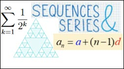
∼ Student Notes ∼Section1A. Sequences & series introduction
Sub-sections on this page:
1A.1 Basics
1A.2 Finding the \(n\)th term
1A.3 Using technology
1A.4 Summary
1A.5 Challenge question
1A.1 Basics
A numerical sequence is a set of numbers listed in a specific order that is determined by a rule. For example, the sequence \(3,\;7,\;11,\;15,\;19,\;23\) is a list of six numbers that begins with the number 3 and the remaining numbers in the list are determined by applying the rule “add 4” to proceed from one number to the next in the list. A sequence is sometimes also referred to as a progression.
A sequence is a set (or list) of numbers, separated by commas, in which each number after the first is determined by a rule.
Each number in a sequence is a called a term of the sequence. A term is referred to by its position in the sequence; for example: first term, 3rd term, 10th term, last term.
It is very helpful to use a variable (letter) to represent the terms of a sequence. The variable \(u\) is most often used, but others such as \(a\) and \(t\) are also common. Individual terms are identified using subscript notation (also referred to as suffix notation) where a small number (the subscript or suffix) is written below and to the right of the sequence variable to indicate the position of the term in the sequence. For example, in the sequence \(3,\;7,\;11,\;15,\;19,\;23\) the fact that the “3rd term is 11” is written as \({u_3} = 11\). The subscript can also be represented by a variable (usually \(n\) or \(r\), but other letters such as \(i\) are also used) so that the \(n\)th term of a sequence (i.e. the general term) is expressed as \({u_n}\).
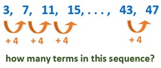
Consider the following sequences.(a) \(1,\;4,\;9,\;16,\;25\)
(b) \(3,\;7,\;11,\;15,\; \ldots ,\;43,\;47\)
(c) \(2,\;1,\;\frac{1}{2},\;\frac{1}{4},\;\frac{1}{8}\)
(d) \(1,\;1,\;2,\;3,\;5,\;8,\;13,\; \ldots \)
The sequences (b) and (d) make use of three dots (…) to indicate that omitted numbers continue in the same pattern. The three dots symbol is called an ellipsis (not to be confused with ellipse). In a sequence, three dots can be used between two terms of a sequence such as in (b), or at the end of a sequence as in (d). An ellipsis appearing at the end of a sequence indicates that the sequence continues without end. Such a sequence has an infinite number of terms and, hence, is called an infinite sequence. The sequences (a), (b) and (c) end after a countable, or finite, number of terms; so, each of these is a finite sequence. The sequences (a) and (c) each have five terms and even though it may not be immediately clear how many terms are in sequence (b), the sequence definitely ends (it’s not difficult to work out that it has 12 terms).
The sum of a sequence of numbers is called a series. For example, if the terms in sequence (c) are added together we get the series \(2 + 1 + \frac{1}{2} + \frac{1}{4} + \frac{1}{8}\).
When the terms of a sequence are added together the sum of the terms is called a series.
Given that this series only has five terms, it is not difficult to manually calculate that the value of the series is \(\frac{{31}}{8}\). If the series had 20 terms, it would be useful to have a formula to compute the sum rather than attempting to do it manually. Although the sequence \(2,\;1,\;\frac{1}{2},\;\frac{1}{4},\;\frac{1}{8}\) and the series \(2 + 1 + \frac{1}{2} + \frac{1}{4} + \frac{1}{8}\) are closely related (their terms are the same), it is important to note that a sequence is a list of numbers whereas a series is a sum of a list of numbers. The subscripted symbol \({S_n}\) is used to denote the sum of the first \(n\) terms of a series, so that \({S_n} = {u_1} + {u_2} + {u_3} + \; \cdots \; + {u_n}\). It's important to note that in this case \(n\) is a fixed number (constant) for a particular sum since it indicates how many terms are to be added together (a letter other than \(n\) could be used).
The sum of the first \(n\) terms in a series with the general term \({u_r}\) (\(r\)th term) where \(r\) is a variable (a 'counter' that starts at 1 and goes to \(n\)) is most efficiently expressed using sigma notation \(\sum\limits_{r = 1}^n {{u_r}} = {u_1} + {u_2} + {u_3} + \; \cdots \; + {u_n}\). Sigma notation is an efficient way to represent a sum using the symbol \(\sum \) (Greek capital letter sigma).
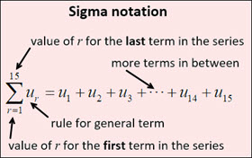
Note that the variable \(r\) does not appear when \(\sum\limits_{r = 1}^n {{u_r}} \) is written out: \(\sum\limits_{r = 1}^n {{u_r}} = {u_1} + {u_2} + {u_3} + \; \cdots \; + {u_n}\)
A letter other than \(r\) can be the variable. For example, \(\sum\limits_{i = 1}^n {{u_i}} = {u_1} + {u_2} + {u_3} + \; \cdots \; + {u_n}\) or \(\sum\limits_{n = 1}^4 {{u_n}} = {u_1} + {u_2} + {u_3} + {u_4}\)
Also, as mentioned, the terms can be represented by a letter other than \(u\). For example, \(\sum\limits_{r = 1}^5 {{a_r}} = {a_1} + {a_2} + {a_3} + {a_4} + {a_5}\) or \(\sum\limits_{k = 1}^n {{t_k}} = {t_1} + {t_2} + {t_3} + \cdots + {t_n}\)
Sequences and series are classified by whether they are finite or infinite; and can also be classified by the rule which generates the terms in the sequence. Sequence (b) is an arithmetic sequence because each term is obtained by adding a constant (can be positive or negative), called the common difference \(d\), to the previous term; \(d = 4\) for sequence (b). Each term in sequence (c) is obtained by multiplying a constant, called the common ratio \(r\), to the previous term; \(r = \frac{1}{2}\) for sequence (c). This type of sequence is called a geometric sequence.
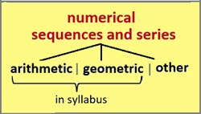
The only types of numerical sequences and series specifically included in the course syllabus are arithmetic and geometric. Nevertheless, in these introductory notes it is helpful to briefly consider some other sequences that are neither arithmetic nor geometric in order to illustrate some concepts regarding sequences.
Although sequences (a) and (d) are neither arithmetic nor geometric, each has a clear rule for generating its terms (more on that in the next section). Sequences that are particularly noteworthy are often given a special name; for example, you may recognize sequence (d) as the Fibonacci sequence. The On-Line Encyclopedia of Integer Sequences (a searchable database containing over 335,000 sequences started in 1964) includes the Fibonacci sequence amongst its list of seven ‘famous sequences’.
1A.2 Finding the nth term (general term)
Another well-known sequence is the triangular numbers which can be illustrated with a triangular dot pattern as shown below.
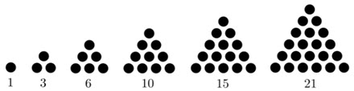
If \({t_n}\) represents the \(n\)th triangular number (i.e. the general term of the sequence), it is clear that:
\({t_1} = 1\)
\({t_2} = {t_1} + 1 = 1 + 2 = 3\)
\({t_3} = {t_2} + 3 = 3 + 3 = 6\)
\({t_4} = {t_3} + 4 = 6 + 4 = 10\) ; and so on.
This pattern leads to the following formula for the \(n\)th triangular number: \({t_1} = 1\), \({t_n} = {t_{n - 1}} + n\)
This formula says “The first term is 1, and the \(n\)th term is equal to the previous term plus \(n\)." This type of formula is called recursive because it describes how later terms in the sequence are computed in terms of previous terms. Knowing that the 6th triangular number is 21, we can easily see that the 7th triangular number is 28 \(\left( {21 + 7 = 28} \right)\). But, what if we want to know the 30th triangular number? A recursive formula is not convenient for computing terms further on in a sequence. Spreadsheets are a handy tool for computing multiple terms in a sequence. Play the video (no sound) at right to see Excel being used to find the 30th triangular number. In the next sub-section we'll take a brief look at using GDCs to work with sequences.
A recursive formula is also referred to as an inductive formula or a recurrence relation. Although this kind of formula - that computes terms in a sequence based on previous term(s) - is helpful for defining some sequences, it is not in the syllabus for this course.
It is much more convenient to have a formula for the \(n\)th term in a sequence that is expressed only in terms of \(n\) (the number, or position, of the term) and does not rely on knowing previous terms. This type of formula is usually called an explicit formula (or closed formula) where he \(n\)th term is written as a function of the independent variable \(n\) (or whichever variable represents the number of the term). In the next two sections (1.B and 1.C) we will see that finding an explicit formula for the general term in an arithmetic or geometric sequence is a straightforward process (they are in the formula booklet). Finding the explicit formula for the general term in other sequences is often less straightforward. What about an explicit formula for the \(n\)th triangular number?
Instead of displaying the dot pattern for triangular numbers as shown above, let's change the shape of the triangular pattern ...
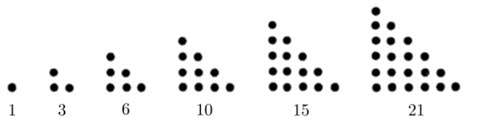
... and then create a duplicate of each triangle (in red) and place it along the existing triangle to form a rectangular dot pattern.
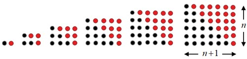
The black dots make up half of the total number of dots in each 'rectangle'. This shows that the explicit formula for the \(n\)th triangular number is \({t_n} = \frac{1}{2}n\left( {n + 1} \right)\). No need for a spreadsheet now ... the 30th triangular number can be computed quickly by simply substituting \(n = 30\) into the formula: \({t_{30}} = \frac{1}{2} \cdot 30\left( {30 + 1} \right) = 15 \cdot 31 = 465\)
Consider again sequences (a) \(1,\;4,\;9,\;16,\;25\) and (d) \(1,\;1,\;2,\;3,\;5,\;8,\;13,\; \ldots \) (Fibonacci sequence) from above. Let \({u_n}\) represent the \(n\)th term in sequence (a) and let \({F_n}\) be the \(n\)th Fibonacci number. The explicit formula for sequence (a) is obviously \({u_n} = {n^2}\). An explicit formula does exist for the Fibonacci sequence (Binet's formula) but it is quite complicated and difficult to derive (definitely not obvious). However, it is not difficult to determine a recursive formula for the Fibonacci sequence. Instead of starting with the value of one term - as we did for the triangular numbers - a recursive formula for the Fibonacci requires starting with the value of the first two terms since the rule for Fibonacci is that each term (from the 3rd term onwards) is the sum of the previous two terms. Hence, the recursive formula for the Fibonacci sequence is \({F_1} = 1,\;\;{F_2} = 1,\;\;{F_n} = {F_{n - 2}} + {F_{n - 1}}\) for \(n > 2\) (typically \({F_0} = 0\)).
In general, it's much more useful to have an explicit formula for finding the \(n\)th term of a sequence especially if you do not have access to technology. However, a recursive formula is usually easier to find - and, if you do have access to technology (next sub-section) it is no more difficult to use a recursive formula than an explicit formula for finding terms of a sequence.
1A.3 Using technology
Technology such as a GDC or spreadsheet software are superb tools for generating and exploring sequences. Be sure to be familiar with sequence commands and operations on the GDC model you are using. Below are images and videos (no sound) showing how one could perform two tasks using two different calculators: the TI-84 Plus and the TI-Nspire CX. In sub-section 1A.2 above, a video showed Excel being used to find the 30th term in the triangular numbers sequence.
Task #1 is simply to generate two sequences: (i) sequence (a) \(1,\;4,\;9,\;16,\;25\) with the general term given by the explicit formula \({u_n} = {n^2}\) (sequence (a) is neither arithmetic nor geometric); and, (ii) the geometric sequence \(2,\;1,\;\frac{1}{2},\;\frac{1}{4},\;\frac{1}{8}\) (sequence (c) from above). We will study explicit formulas for the \(n\)th term of a geometric sequence in Section 1.C; so, a recursive formula will be used here (it's easy to see that the initial term is 2 and afterwards each term is obtained by multiplying the previous term by \(\frac{1}{2}\)).
Task #2 is to investigate the ratio of successive terms in the Fibonacci sequence, \(\frac{{{F_n}}}{{{F_{n - 1}}}}\), as \(n\) increases (using the first 30 Fibonacci numbers).
■ TI-84 Plus ■
Task #1
(i): SInce we know an explicit formula for sequence (a) then we can use the sequence command (seq). Press '2nd', 'stat', 'right arrow' to the LIST OPS menu. Select the the sequence command (5. seq), enter the sequence's characteristics (expression, variable, begin, end), then 'paste', and the command can then be performed on the home screen displaying the terms of the sequence as a list.
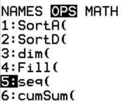
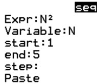
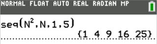
(ii) Since we're applying a recursive formula to create sequence (c), we use sequence graphing mode (SEQ) to enter the recursive formula as the function \(u\left( n \right)\). Press 'mode' then move down to the 5th line and change the graphing mode from FUNCTION to SEQ. Press 'Y=' and enter the recursive formula \(u\left( n \right) = \frac{1}{2}{u_{n - 1}}\). It is not possible to enter subscripts on the TI-84, so \({u_{n - 1}}\) must be entered as \(u\left( {n - 1} \right)\). The function name \(u\) is obtained by pressing '2nd', '7'; and the sequence variable \(n\) is obtained by pressing 'X,T,\(\theta \),\(n\)'. Now create the sequence using the seq command (as above for sequence (a)) - entering \(u\left( n \right)\) for the expression and \(n\) for the variable.
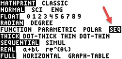
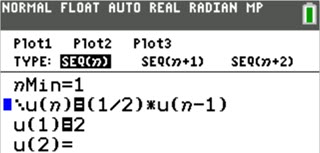
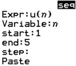
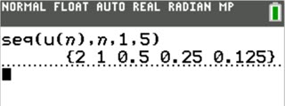
Task #2 video (no sound)
■ TI-Nspire ■
Task #1
(i) Enter the explicit formula for sequence (a) by using the sequence command (seq). It is best to access seq command from the Catalog (button has image of a book on it and is directly below the delete button). Highlighting seq in the list of commands in the Catalog displays the required syntax (at bottom) for the command: expression, variable, lowest value of variable, highest value of variable (same as TI-84; 'Step' is optional since it is in square brackets).
(ii) To enter the recursive formula for sequence (c), use the seqn command found directly below the seq command in the Catalog. Enter the recursive formula \(\frac{1}{2}{u_{n - 1}}\) for the expression of \(u\) in terms of \(n\), then list of initial terms. There is only one initial term, i.e. \({u_1} = 2\) which is contained in curly brackets because it is a list. Enter 5 for the maximum value of \(n\).
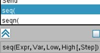
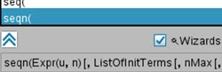
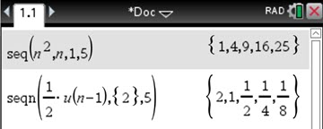
Task #2 video (no sound)
1A.4 Summary
- A numerical sequence is a set of numbers listed in a specific order determined by a rule.
- Each number in a sequence is called a term of the sequence and is identified using subscript notation; e.g. \({u_5}\) refers to the fifth term.
- Sequences either have a countable number of terms (finite sequence) or the terms of a sequence continue indefinitely (infinite sequence).
- A series is formed by adding all the terms of a sequence. Note: a finite series will always have a sum whereas an infinite series may or may not converge to a sum (covered in Section 1.C on geometric sequences and series).
- Sigma notation: Greek letter \(\sum \) (sigma) is used to indicate a sum; e.g. \(\sum\limits_{r = 1}^n {{u_r}} = {u_1} + {u_2} + \; \cdots \; + {u_n}\) where \(n\) is a constant and \(r\) is a variable (counter) that goes from 1 to \(n\). Note: letters other than \(n\) and \(r\) may be used
- An arithmetic sequence is one such that each term is obtained by adding a constant (common difference \(d\)) to the previous term (see Section 1.B).
- A geometric sequence is one such that each term is obtained by multiplying a constant (common ratio \(r\)) to the previous term (see Section 1.C). Note: arithmetic and geometric are the only type of sequences/series included in the syllabus
- A formula for the \(n\)th term in a sequence (i.e. the general term) can be recursive or explicit. Note: recursive formulas are not included in the course syllabus
- A recursive formula for a sequence provides an initial term (or terms) and a rule for computing subsequent terms from the previous term (or terms).
- An explicit formula for a sequence is a rule used to compute each term directly from only the number (position) of the term.
- Be familiar with sequence commands and operations on the GDC model you are using. Spreadsheet software is very useful for constructing sequences and could be helpful if you were to investigate a sequence as part of your Exploration (IA).
1A.5 Challenge question
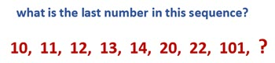
answer: 1010
Each number in the sequence has a value of 10 written in different bases. The first number is in base 10, the next in base 9, the next in base 8, and so on. 1010 has a value of 10 in base 2.
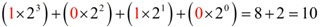
| | go to next section: 1B. Arithmetic sequences & series → |
 Twitter
Twitter
 Facebook
Facebook
 LinkedIn
LinkedIn